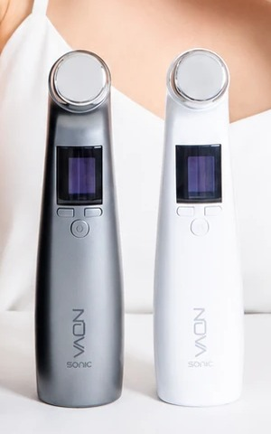

DAILY CARE
하루 12분으로
완성되는 케어
시술을 예약하고 기다릴 필요 없이, 매일의 스킨케어 시간에 12분을 더하는 것으로 충분합니다.
KEY POINTS
매일 쓰는 고밀도 초음파,
노바소닉의 세 가지 기준
17MHz 고밀도 진동
초당 1,700만 회의 미세 진동으로 표피층을 정교하게 관리합니다.
매일 사용하는 데일리 케어
열에 의존하지 않는 설계로 다운타임 없이 매일 관리할 수 있습니다.
KC 인증 · 미국 FDA 등록
피부에 닿는 헤드에는 메디컬 그레이드 SUS 소재를 적용했습니다.
WHY 17MHz
1초에 1,700만 번,
더 높은 주파수는 더 미세한 진동
초음파는 사람의 귀로 들을 수 없는 고주파 음향 진동입니다. 주파수가 높을수록 진동은 더 미세해지고, 그만큼 표피층을 섬세하게 다룰 수 있습니다. 노바소닉은 17MHz 대역을 사용해 열에 의존하지 않는 비열성(Non-Heat) 방식으로 접근합니다.
COMPARISON
주파수 대역에 따른 차이
1~3MHz 대역은 깊은 층의 리프팅에 초점이 맞춰져 있어 파장이 크고 자극이 강한 편입니다. 노바소닉은 표피층의 결과 흡수 관리에 맞춘 대역을 사용합니다.
| 일반 홈 초음파 기기 | 노바소닉 | |
|---|---|---|
| 주파수 | 1~3MHz | 최대 17MHz |
| 초당 진동수 | 100만~300만 회 | 1,700만 회 |
| 주요 관리 부위 | 진피 심부 리프팅 | 표피층 결·흡수 관리 |
| 열 사용 | 열 에너지 기반 | 비열성 설계 |
| 사용 주기 | 2주 1회 권장 | 매일 사용 가능 |
WATER DROP TEST
물방울 하나로 확인하는 차이
기기 헤드 위에 물방울을 올려두면 주파수 대역의 차이가 눈으로 드러납니다.
NON-HEAT DESIGN
열을 쓰지 않는 설계
자외선, 건조, 마찰, 스트레스 같은 자극이 이어지면 피부는 쉽게 지칩니다. 노바소닉은 HIFU나 RF처럼 열 에너지를 사용하지 않는 노히트 설계로, 통증이나 다운타임 없이 매일의 관리를 이어갈 수 있도록 만들었습니다. 음파 진동이 각질층과 그 주변의 수분을 미세하게 흔들어 부드러운 기계적 자극을 만들고, 이어지는 스킨케어 성분이 자리 잡기 좋은 상태를 준비합니다.
4 CUSTOM MODES
4가지 맞춤 모드
3MHz 이하~17MHz 사이에서 목적에 맞는 모드를 고르고, 1~5단계 강도 중 피부에 맞는 세기를 선택합니다.
1. 링클즈 (Wrinkles)
결을 정돈하는 촘촘한 케어
2. 리프팅 (Lifting)
흐트러진 얼굴 라인 케어
3. 타이트닝 (Tightening)
안쪽부터 채워주는 밀착 케어
4. 안티에이징 (Anti-aging)
타고난 듯 건강한 안색 케어
하루에 한 가지 모드, 15분 이내 사용을 권장합니다. 여러 모드를 이어서 쓰거나 한 부위를 15분 이상 사용하지 마세요.
PRODUCT STRUCTURE
제품 구조

- Curved Head 코, 턱 등 굴곡진 부위에 밀착되는 커브드 헤드
- LCD 디스플레이 현재 모드와 남은 시간 확인
- 모드 변경 버튼 4가지 모드 중 선택
- 세기 변경 버튼 1~5단계 강도 순차 변경
- 전원 버튼 3초 이상 눌러 전원 on/off
- 충전 단자 본체 뒤쪽, USB-C
HOW TO USE
사용 방법
- 물기 제거 & 도포 세안 후 물기를 제거하고 에센스나 젤을 충분히 도포합니다.
- 전원 켜기 기기 앞면의 전원 버튼을 3초 이상 눌러 전원을 켭니다.
- 모드 선택 전원 버튼 위의 모드 버튼을 눌러 모드를 선택합니다.
- 강도 선택 모드 선택 후 아래 버튼을 눌러 강도(1~5단계) 중 피부에 맞는 강도를 선택합니다.
- 마무리 케어 관리 후 에센스와 크림을 발라 마무리합니다.
- 세척 & 보관 사용 후 깨끗한 티슈로 헤드를 닦아서 보관합니다.
하루에 한 가지 모드 이상, 또는 15분 이상 사용은 주의해 주세요.
DESIGN
매일 쓰기 위한 설계
커브드 헤드
코, 턱처럼 굴곡진 부위에도 밀착되도록 헤드를 곡면으로 설계해, 평면 헤드 대비 접촉면적을 넓혔습니다.
가벼운 무게
170g, 스마트폰과 비슷한 무게로 장시간 사용해도 손목 부담이 적습니다.
무선 사용 & 독 충전
USB-C 독 충전 방식으로 선 없이 사용하며, 완충 시 최대 2시간 사용할 수 있습니다.
SPECIFICATION
제품 사양
- 제품명
- 노바소닉 (NOVASONIC)
- 모델명
- DJ-NK01EN
- 색상
- 실버 / 화이트
- 기술 특징
- 고밀도 초음파 디바이스
- 주파수 범위
- 3MHz 이하 ~ 17MHz (가변)
- 모드
- 링클즈 / 리프팅 / 타이트닝 / 안티에이징 (4모드 × 1~5단계)
- 크기
- 185 × 47 × 45 mm
- 무게
- 170g
- 충전 방식
- USB-C
- 충전 시간
- 1~1.5시간 (완충 기준)
- 사용 시간
- 완충 후 최대 2시간
- 정격전압
- 100V-240V, 50Hz
- 헤드 소재
- 메디컬 그레이드 SUS
- 사용 횟수
- 무제한 (소모품·카트리지 없음)
- 방수 여부
- 방수 미지원
- 구성품
- 본체 / 충전 케이블 / 사용 설명서
- 출시년월
- 2025년 11월
- 제조국
- 대한민국
- 보증 기간
- 제조사 보증 1년
- 국내 인증
- KC 인증 (R-R-DAEJ-DJ-NK01EN)
- 해외 등록
- 미국 FDA 등록
- A/S 문의
- 010-3790-3782
상품정보 제공고시
전자상거래법 표준 정보
전자상거래 등에서의 상품정보 제공 고시 기준에 따른 표준 정보입니다.
- 품명 및 모델명
- Ultra Skin Care Device / DJ-NK01EN
- KC 인증 필 유무
- KC 인증 / R-R-DAEJ-DJ-NK01EN
- 정격전압 / 소비전력
- 100V-240V, 50Hz
- 제조자
- 주식회사 대정에코테크
- 제조국
- Made in Korea
- 크기 / 무게
- 185 × 47 × 45 mm / 170g
- 주요 사양
- 3MHz 이하~17MHz 가변 주파수, 스마트 LCD 디스플레이 등
- 품질보증기준
- 본 제품에 이상이 있을 경우 공정거래위원회 고시 소비자분쟁해결기준에 의거해 보상합니다.
- A/S 책임자와 전화번호
- 010-3790-3782
SAFETY
사용 시 주의사항
안전한 사용을 위해 구매 전 반드시 확인해 주세요.
사용을 피해야 하는 경우
- 심장 박동기 또는 이식형 의료 전자기기를 사용하는 분
- 심장 질환 및 중증 순환기 질환이 있는 분
- 임신 중이거나 수유 중인 분
- 피부에 감염, 염증, 부기, 화농, 상처, 출혈이 있는 부위
- 중증 아토피 피부염, 심한 습진, 가려움이 동반된 부위
- 악성 종양 치료 중이거나 의심되는 경우
- 얼굴에 금속 플레이트, 리프팅 실, 실리콘 등 삽입물이 있는 부위
- 레이저, 필링, 실리프팅 등 수술 직후 부위
- 심하게 햇볕에 탄 직후의 피부
의사 상담을 권장하는 경우
- 당뇨병, 자가면역질환 등으로 회복력이 저하된 분
- 피부과 치료 중(외용약·내복약)으로 피부 상태가 불안정한 분
- 스테로이드 사용으로 피부가 얇아진 부위
- 혈행 장애 또는 심한 부종이 있는 분
- 신경이 예민하거나 금속 알레르기가 있는 피부
사용을 피해야 하는 부위
- 눈 바로 위, 눈꺼풀, 안구 주변 (뼈 바로 위도 피해 주세요)
- 갑상선 부위 (목 앞쪽)
- 점막 부위 (입술 안쪽 등)
- 뼈에 매우 가까운 부위에 장시간 사용
- 성형 수술 부위 (의사의 허가가 없는 경우)
그 밖의 안내
- 본 제품은 방수를 지원하지 않습니다. 물에 담그거나 젖은 상태로 충전하지 마세요.
- 제품을 임의로 분해하거나 개조하지 마세요.
- 직사광선과 습기를 피해 보관하고, 어린이의 손이 닿지 않는 곳에 두세요.
- 제품 이미지는 사용 환경 및 모니터에 따라 실제와 다르게 보일 수 있습니다.